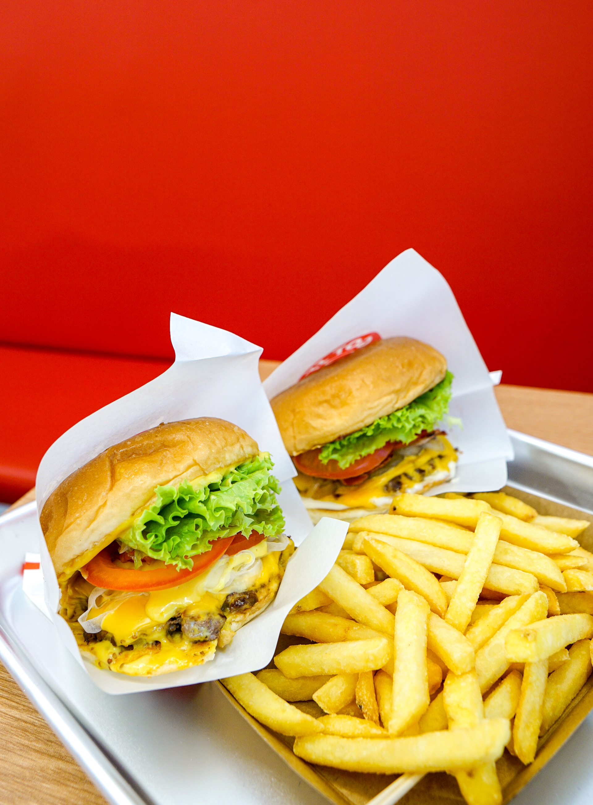

Hamburger and Fries
Home
Breakfast
Lunch
Dinner

Ingredients for hamburger
- 2 lbs ground beef
- 1 onion
- 1 cup of panko bread
- 2 tsp salt
- 1 tsp onion powder
- 1 tsp garlic powder
- 1 tsp pepper
- 2 large eggs
- 1 tomato (optional)
- 1 cup lettuce (optional)
- slices of cheese (optional)
Ingredients for fries
- bag of pre-made fries
- 1 tsp of salt
Instructions
- Set out a large mixing bowl. Add in the ground beef, crushed crackers, egg, Worcestershire sauce, milk, salt, garlic powder, onion powder, and pepper. Mix by hand until the meat mixture is smooth, but stop once the mixture looks even.
- Press the meat down in the bowl, into an even disk. Use a knife to cut and divide the hamburger patty mixture into 6 patties
- Preheat the grill or a skillet to medium heat.
- For thick patties: Grill or fry the patties for 3-4 minutes per side.
- For thin patties: Cook on the griddle for 2 minutes per side.
- Meanwhile, season your pre-made fries with salt.
- Heat a pot with oil and fry your fries.
- Remove from pot when golden brown.
- Stack the hot patties on hamburgers buns, and top with your favorite hamburgers toppings.
- Serve your hamburger with your fries.
If you enjoyed this quick and easy meal, try our carne asada tacos recipe or our spagetti recipe.